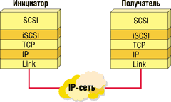
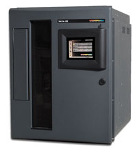
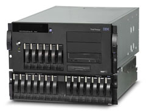
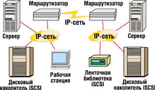

Игорь Колбин
Как известно, интерфейс SCSI (Small Computer Systems Interface) позволяет хостам, серверам резервного копирования, Web-серверам и т. п. на уровне блоков обмениваться данными с различными периферийными устройствами, например, с дисковыми подсистемами, ленточными накопителями, приводами оптических дисков и принтерами. Традиционная технология SCSI использует кабели параллельного типа для соединения хостов и периферии. Существенный недостаток подобного соединения - ограничения по длине и числу подключенных устройств.
Для преодоления ограничений SCSI несколько лет назад были разработаны новые технологии. Так, в настоящее время наиболее распространена такая технология хранения, как сети SAN (Storage Area Network) на основе протокола Fibre Channel (FC). Соединения FC обычно используют оптический кабель и обеспечивают пропускную способность 2 Гбит/c. SAN - отдельная сеть, полностью независимая от сети TCP/IP, в ней используется совершенно другая технология, поэтому ее администрирование также выполняется отдельно и требует специальных знаний FC.
В свою очередь, интерфейс iSCSI (Internet Small Computer System Interface) предназначен для ввода-вывода на уровне блоков и реализует передачу данных по протоколу SCSI через обычную, а не выделенную сеть. Данный протокол основывается на клиент-серверной архитектуре SCSI и, в числе прочего, определяет способ осуществления блочного ввода-вывода в сети TCP/IP (рис. 1). В iSCSI предусматривается инкапсулирование (встраивание) SCSI-команд в TCP-пакеты, которые затем пересылаются стандартными средствами протокола IP. В интерфейсе введены понятия инициатора iSCSI (обычно это хост) и получателя iSCSI (обычно система хранения). Инициатор и получатель могут подключаться как напрямую, непосредственно, так и с помощью маршрутизатора. В первом случае функции iSCSI реализуются непосредственно на контроллере ввода-вывода. Во втором случае под маршрутизатором понимается дополнительный компонент, выполняющий преобразование протоколов вне устройства-инициатора или получателя. Заметим, что на практике встречается значительное разнообразие в подходах к реализации iSCSI.
|  | Рис. 1. Уровни протокола iSCSI.
|
Позиционирование интерфейса
По мнению ряда экспертов, технология iSCSI представляет особый интерес для систем начального уровня. Она позволяет эффективно соединить централизованную систему хранения с небольшими удаленными серверами масштаба подразделения при условии низкой нагрузки ввода-вывода и обслуживания приложений, для которых время реагирования некритично.
В то же время в корпоративном секторе довольно часто ведутся критически важные вычисления. При этом требуется обеспечить предсказуемое время реакции, определенный порядок действий при достижении пороговых значений и эффективное управление. Сети TCP/IP отличаются от сетей FC - они с самого начала были рассчитаны на другие задачи. Если передавать трафик FC по сети TCP/IP, то придется либо искать компромисс, сокращая нагрузку, которую создают приложения, либо выделять дополнительные ресурсы. Отсюда следует, что сети хранения на базе TCP/IP должны обладать некоторыми характеристиками FC. В частности, сетевой администратор должен предпринимать все возможные меры для предотвращения потери пакетов, которая ухудшает время отклика серверных приложений. Соответственно, персонал должен обладать высокой квалификацией, требуются также дополнительные затраты времени и сетевые ресурсы.
|  | Ленточная библиотека iSCSI.
|
Технологию iSCSI нельзя рассматривать изолированно. В сети TCP/IP наряду с доступом на уровне блоков по iSCSI может использоваться файловый доступ к файл-серверу NAS (Network Attached Storage). С точки зрения обычных операций с файлами (весь файл загружается на хост в начале сеанса, обрабатывается и записывается обратно на файл-сервер в конце сеанса), файловые серверы служат ключевым элементом множества приложений. Относительно недавно доступ на уровне файлов начал использоваться и в серверных приложениях (back-office) и СУБД, что объясняется совершенствованием протоколов и удешевлением высокопроизводительного оборудования, особенно на основе гигабитного Ethernet.
|  | Дисковый накопитель iSCSI.
|
В некоторых областях технологии возникает пересечение между методами блочного доступа на основе iSCSI и файлового доступа на основе файл-серверов. Преимущество iSCSI - прозрачная (для уровня операционной системы) интеграция протокола TCP/IP и драйверов устройств. Сохраняется модель SCSI, используемая в непосредственно подключаемых системах хранения (Direct Attached Storage, DAS). Каждое приложение, способное обращаться к DAS, естественным образом поддерживает и iSCSI.
Универсальные сети на основе TCP/IP сейчас все шире используются практически для всех типов коммуникаций. Конвергенция сказывается не только на характере связи хостов с терминалами и системами хранения, но и на IP-телефонии. Однако эксперты полагают, что на полноценную реализацию этого подхода уйдет немало времени. В кратко- и среднесрочной перспективе iSCSI и доступ на уровне файлов, несомненно, будут лишь дополнением к технологии FC, сохраняющей бесспорные преимущества. Например, в сети FC имеются встроенные функции обеспечения качества передачи данных и стабильной пропускной способности на уровне 2 Гбит/с. Это повышает надежность функционирования, особенно важную для корпоративного сектора. Кроме того, замена эффективно работающей сети FC на относительно новую технологию часто не имеет смысла, поскольку делает неэффективными инвестиции в существующую конфигурацию. Однако перспективы новой технологии улучшаются в тех случаях, когда в компании нет сети FC и критически важных приложений, но требуется связь с удаленными хостами.
Основную работу по стандартизации iSCSI выполняет рабочая группа по системам хранения на основе IP комитета Internet Engineering Task Force (IETF, http://www.ietf.org). Уже завершено согласование состава основной спецификации протокола, она одобрена в качестве официального стандарта.
Возможности iSCSI
В ИТ-инфраструктуре большого или среднего предприятия зачастую можно выделить сети нескольких типов. Так, связь хостов друг с другом и с терминалами выполняется посредством TCP/IP (через Интернет, интранет или экстрасеть, рис. 2). В эту категорию попадает связь с файл-сервером, который с технической точки зрения представляет собой специализированный сервер и использует связь между хостами. Сети TCP/IP и FC на уровне управления могут использовать одни и те же компоненты на низшем (физическом) уровне, но они значительно отличаются на более высоком уровне, скажем, связанном с коммутацией.
|  | Рис. 2. Сеть с iSCSI-устройствами.
|
Кроме сетей TCP/IP, существует и телефонная сеть, которая пока слабо связана с системой хранения данных, но должна учитывать перспективы развития IP-телефонии. В компаниях могут быть еще и специализированные сети (например, для управления технологическими процессами).
Сети разных типов (TCP/IP, FC и телефонные) строятся из разных компонентов и требуют разной квалификации специалистов и методов управления, причем в каждом случае затраты на управление могут существенно превышать цену оборудования и его монтажа. Одновременная эксплуатация разных типов сетей значительно усложняет эту проблему.
Новейшие разработки обещают значительно сократить такого рода расходы. Решение заключается в конвергенции трех типов сетей в одну универсальную сеть. В телефонных сетях в настоящее время идет постепенный переход на IP-телефонию, аналогичные процессы происходят и в сфере сетевого хранения данных, где сеть TCP/IP используется для связи как между хостами и системами хранения, так и между компонентами сети FC.
Формируемая сеть универсального типа реализует следующие преимущества. Расходы на приобретение отдельных компонентов сокращаются, поскольку TCP/IP используется как стандартная технология, а компоненты TCP/IP производятся в больших масштабах и легко масштабируются. Благодаря универсальному типу сети упрощается и ускоряется проектирование, монтаж и устранение неисправностей. Для используемых технологий уже накоплен опыт монтажа, эксплуатации, консалтинга и диагностики; дополнительные ресурсы приобретаются легко и относительно недорого. Сокращаются и расходы на управление, поскольку требуется управлять только одним типом сетей.
Кроме того, поскольку сеть TCP/IP основана на маршрутизации, у нее нет ограничений на расстояние. Число адресов в IPv6 практически неограниченно, и хотя адресное пространство IPv4 меньше, использование частных адресов способно решить проблему адресации. Не нужны отдельные методы реализации сетей высокой доступности.
Базовые требования
Решения iSCSI следует рассматривать в двух аспектах. Для закрытых решений не обязательно использовать окончательную версию протокола, утвержденную в качестве стандарта. В таких случаях производитель может использовать собственные компоненты как для инициатора, так и для получателя iSCSI. В систему необходимо включить и инфраструктурные компоненты, например, сервис имен. Здесь многое зависит от того, способны ли компоненты одного поставщика легко взаимодействовать друг с другом (на одной стороне обмена маршрутизатор может преобразовывать протокол FC в iSCSI, а на другой стороне маршрутизатор того же производителя выполняет обратное преобразование).
Основой для смешанной среды (инициатор iSCSI одного производителя работает с получателем iSCSI другого) может быть только полностью утвержденный официальный стандарт, но и этого недостаточно для критически важных корпоративных приложений. В процессе тестирования решения необходимо проверить его работу в экстремальных или маловероятных ситуациях. Кроме того, необходимо обеспечить соответствующий механизм диагностики и устранения ошибок, которые могут возникнуть даже после тщательного тестирования и сертификации.
Другой важный фактор - дополнительная нагрузка на хост и систему хранения, связанная с обработкой стека TCP/IP. Стандартные технологии SCSI и FC даже в случае крайне интенсивного ввода-вывода поддерживают нагрузку на хост минимальной. Если система хранения напрямую соединена по SCSI с хостом, никаких сложных процедур не требуется. Основная обработка ввода-вывода в сетях хранения FC выполняется адаптерами HBA (Host Bus Adapters). Нагрузка при этом увеличивается ненамного больше, чем при использовании SCSI. Однако ввод-вывод iSCSI должен идти через стек TCP/IP. Последний должен обрабатывать ошибки многих разных типов, а пересылка данных осуществляется между пользовательским пространством, ядром и драйвером, поэтому обработка в стеке TCP/IP значительно менее эффективна, чем в стеке SCSI. Если обработка TCP/IP не перекладывается на специальную карту адаптера (HBA или сетевая карта), а реализована программно, то нагрузка на хост будет очень высокой. Например, сервер приложений может оказаться полностью загружен трафиком - при этом ресурсов для обработки приложения у него не останется. По указанной причине для корпоративных систем необходимы адаптеры с отдельным механизмом обработки стека TCP/IP (TCP Offload Engines, или TOE).
Управление потоком данных
Важный для корпоративных систем аспект - реакция сети (протокола) на превышение пороговых значений. Так, если число пакетов, идущих от источника, превышает пропускную способность сети или принимающую способность получателя, то протокол должен как-то сообщить отправителю о необходимости уменьшить скорость передачи. Другой вариант - протокол должен с самого начала исключить возможность подобных ситуаций. В этих случаях можно использовать разные алгоритмы управления, которые у сетей FC и TCP/IP значительно отличаются.
Управление потоком типа creditbased flow control в основном применяется в сетях FC. Здесь отправитель и получатель заранее договариваются о размерах блоков данных, которые будут посылаться. Компоненты сети и источники должны обеспечить необходимое число буферов между конечными точками, чтобы гарантировать прием входящих данных. Чем больше расстояние, тем больше нужно буферов для приема всех неподтвержденных пакетов, которые еще не дошли до получателя. Это означает, что другие нагрузки (даже имеющие высокий приоритет) не смогут использовать ресурсы, предназначенные для данных целей.
С другой стороны, в сетях TCP/IP обычно используется управление потоком типа windowbased flow control, основанное на обратной связи. Допустим, в сети возникает узкое место, и не успевший освободиться компонент не может принять новые пакеты и потому отвергает их. В результате происходит сложная процедура восстановления с повторением запроса на посылку пакета, что приводит к загрузке ресурсов и увеличению времени ожидания из-за повторных запросов.
Полоса пропускания
Темпы прогресса в области пропускной способности для TCP/IP и FC значительно различаются. Для Ethernet сейчас широко используется скорость 1 Гбит/с, а в сетях FC уже некоторое время доступна скорость 2 Гбит/с. Правда, уже получила статус стандарта и реализована поддержка Ethernet 10 GbE. Разработка iSCSI TOE на основе 10 GbE может занять определенное время. Началась разработка и стандартизация продуктов 10 Gbps FC, однако их серийное производство начнется, очевидно, не ранее 2004 г.
При сравнении GbE с FC нужно учитывать различную тактовую частоту. У GbE номинальная пропускная способность равна 1,250 Гбит/с, а у FC - 1,062 Гбит/с. Это дает GbE некоторое преимущество, если не учитывать накладные расходы. Некоторые эксперты полагают, что при комплексном анализе сети FC все-таки оказываются выгоднее TCP/IP.
Максимальный размер блока FC составляет порядка 2100 байт (без битов синхронизации и CRC). В сети TCP/IP размер пакета составляет около 1500 байт. Если протокол FC отображается на TCP/IP (например, в маршрутизаторе iSCSI), то, возможно, что из одного блока FC получатся два пакета TCP/IP. Производители iSCSIHBA и маршрутизаторов iSCSI пытаются минимизировать эти эффекты при больших объемах данных с помощью так называемого интеллектуального разбиения. Считается, что более эффективно использовать кадры "гигантских" блоков (jumbo frames) в сети TCP/IP. Обычно кадры имеют размер 9000 байт, но возможны и другие варианты (например, 16 тыс. байт).
Теперь посмотрим, сколько служебной информации TCP/IP требуется для протокола iSCSI по сравнению с сетью FC. Примерные накладные расходы TCP/IP превышают 4,3%, тогда как аналогичный показатель у FC находится на уровне 2,7%. Точные значения здесь определяются конкретной конфигурацией.
Доступность
Пути передачи данных от отправителя к получателю резервируются для улучшения доступности. Если связь будет нарушена, то ввод-вывод пойдет по другому маршруту. Эта функция на хостах реализуется с помощью ПО для работы с несколькими маршрутами (multipath), которое обнаруживает проблему и переключается на другой маршрут.
ПО такого рода необходимо и для сетей iSCSI, и для конфигураций FC, но в любом случае его необходимо тщательно протестировать и сертифицировать, а этот процесс сейчас только начинается. Поэтому для критически важных приложений на основе iSCSI необходимо убедиться в наличии соответствующих сертифицированных конфигураций multipath.
Практически любые сети строятся на основе коммутаторов. Перенаправлением блоков FC занимаются протоколы нижнего уровня, во всех коммутаторах величина задержки не превышает 3 мс. В сетях TCP/IP широко используется и коммутация, и маршрутизация. Коммутируемые сети TCP/IP сравнимы с сетями FC и даже превосходят их по характеристикам, однако в сетях TCP/IP с маршрутизацией время ввода-вывода больше - задержка на маршрутизаторе может составить несколько десятков миллисекунд. Если данные идут через несколько маршрутизаторов, время реагирования на запросы приложения может значительно увеличиться.
Маршрутизаторы можно использовать и в сетях FC, однако их применяют только для выполнения специальных функций, например, для преобразования протокола FC в SCSI (при необходимости использовать старые устройства в конфигурации FC или для реализации связи на большие расстояния для отдельных каналов в отсутствие прямого соединения FC).
При больших расстояниях возникает также проблема со временем передачи сигналов. Скорость распространения света в оптоволокне составляет около 200 тыс. км/с, т. е. сигнал проходит 100 км за 1 мс - с учетом времени на передачу подтверждения. Если принять, что в обычной конфигурации ввод-вывод длится в среднем 0,5-6 мс, то этот параметр можно игнорировать при расстояниях, не превышающих несколько километров. Поскольку у сетей FC отдельные кабели, то для них максимальная длина кабеля не ограничена, как и у сетей TCP/IP. Однако могут возникнуть проблемы при использовании исторически сложившейся сложной сети TCP/IP, где потоки данных не всегда передаются по кратчайшему маршруту.
Даже если сеть TCP/IP, управляющая трафиком данных iSCSI, будет реализована как выделенная коммутируемая сеть с постоянной полосой пропускания не меньше 1 Гбит/с, из-за ошибок проектирования скорость между двумя маршрутизаторами может опуститься до уровня 100 Мбит/с и даже ниже. Такие ситуации недопустимы, поскольку при пропускной способности ниже 1 Гбит/с увеличиваются задержки при доступе к данным жизненно важных приложений.
Сервисы сетей хранения
Помимо функций "чистой" коммутации сети хранения реализуют расширенные функции, например, зеркалирование и репликацию данных. При работе с iSCSI необходимо проверить наличие этих функций и их надежность.
Загрузочная информация и другие данные в конфигурациях высокой доступности часто хранятся не на локальном диске, а на централизованной системе хранения, которая обслуживает несколько хостов. Это позволяет заменять вышедшее из строя оборудование без установки операционной системы заново - новый хост загружает ОС с того же диска, который был загрузочным для старого хоста. Другой сценарий применения удаленной загрузки - случай, когда большое число серверов выполняют одну и ту же работу и требуется централизовать их управление. Для Unix-систем это реализуется достаточно просто: нужен дополнительный сервер, который выделяет IP-адреса и сообщает клиенту, где находятся данные.
К настоящему времени функции зеркалирования, репликации и т. п. реализованы в сетях хранения - их выполняют специальные устройства (appliance), которые работают как система хранения (получатель) для хостов и как хосты (инициатор) для физических систем хранения. Наиболее важные функции таких устройств - организация пула хранения (виртуализация хранения); локальное и удаленное зеркалирование; репликация; создание "мгновенных снимков", поддержка утилит копирования, выпущенных независимыми разработчиками.
Впрочем, эти функции не обязательно выполнять на специализированных устройствах - они постепенно переносятся на коммутаторы FC. Пока эти функции не реализованы в сетях TCP/IP.
Управляемость
Под управляемостью понимают следующие возможности централизованного управления системой:
- автоматическая регистрация всех компонентов и соединений сети хранения;
- активный мониторинг всех компонентов и соединений (статус, производительность и т. п.);
- активное управление всеми компонентами и соединениями;
- централизованное выделение ресурсов;
- запись и хранение архивных данных;
- составление отчетов и анализ тенденций.
В настоящее время эти функции реализованы для сетей FC. Связь с компонентами хранения осуществляется по разным интерфейсам, например, SNMP, который хорошо известен и не вызывает проблем. Некоторые функции используют API-интерфейсы оборудования, например, HBA API. В ряде случаев их можно реализовать с помощью адаптации утилит управления. Эти интерфейсы позволяют регистрировать все параметры компонентов сети хранения (производитель, версия микрокода, обслуживаемые хосты и т. п.) и организовать полностью автоматическое выделение ресурсов на основе правил.
Утилита управления должна обеспечить согласованное выполнение следующих операций:
- конфигурирование логических номеров устройств LUN (Logical Unit Number) системы хранения;
- выделение LUN для порта;
- обновление масок LUN, чтобы только определенные хосты имели к нему доступ;
- определение зон (контроль доступа и оптимизация пропускной способности);
- определение LUN в Volume Manager на хосте;
- расширение файловой системы с помощью томов и, при необходимости, расширение таблиц баз данных.
В качестве примера обычно рассматривают путь передачи данных, охватывающий все компоненты и соединения, начиная с базы данных и кончая физическими дисками в системе хранения. Производители утилит и инфраструктур управления пока не анонсировали такие же функции для iSCSI. По мнению ряда экспертов, полное централизованное управление абсолютно необходимо для эффективного применения iSCSI в корпоративном секторе.
Зонирование - одна из основных функций выделения ресурсов. Это центральный компонент FC, обеспечивающий безопасность и доступность инфраструктуры ИТ. Для iSCSI зонирование реализуется с помощью нового сервиса iSNS (Internet Storage Name Services) или сетевых функций TCP/IP. Хорошая основа для этого решения - сети VLAN. Поскольку в компании может потребоваться много зон, то необходимо выяснить, хватит ли максимального числа VLAN с учетом использования одной из этих сетей для терминалов. Для FC нет жестких ограничений на число зон в коммутаторе. Согласно официальным стандартам, VLAN поддерживает до 4096 определений. Максимальное число VLAN может разниться в зависимости от используемой спецификации TCP/IP. В этой области также пока отсутствует интеграция утилит или инфраструктур управления.
Безопасность
Сети FC - это физически выделенные сети, кабели и коммутаторы здесь расположены в местах, куда имеет доступ только авторизованный персонал. Это обеспечивает высокий уровень защиты от попыток проникновения извне. Аналогично и выделенная сеть TCP/IP в конфигурации iSCSI с теми же мерами безопасности не требует дополнительных мер защиты.
Но если трафик iSCSI идет по компонентам, используемым и для обычной связи, или находящимся на незащищенных объектах, то требуется предпринять дополнительные меры безопасности.
Протокол защиты IPsec, выполняющий аутентификацию и проверку целостности, поддерживается стандартом iSCSI. Основной механизм этой защиты - сильная криптография, требующая значительных ресурсов, поэтому возможность использования IPsec зависит от конкретных условий заказчика. К сожалению, первые продукты iSCSI не поддерживали IPsec. Даже если этот протокол реализован в iSCSIHBA, нужно проверять, где выполняется шифрование - на HBA (с помощью микрокода или аппаратно) или на хосте. В последнем случае создается значительная нагрузка на хост, особенно при переходе к скорости 10 GbE.
Если IPsec не поддерживается компонентами iSCSI, требуется внешнее решение. Для сетей TCP/IP выпущено множество устройств, реализующих защиту, прежде всего защитные экраны и решения VPN (виртуальные частные сети). Эти два решения часто реализуются в одной системе. С точки зрения приложений, использующих систему хранения, при таком варианте увеличивается время ввода-вывода.
Протоколы FCIP и iFCPПротокол FCIP (FC over IP) реализует туннелирование (рис. 3), при котором блоки FC упаковываются в пакеты TCP/IP и передаются по сети TCP/IP. Эта технология позволяет без особого труда связать географически распределенные "островки" сетевого хранения. Она работает следующим образом: маршрутизатор хранения (конвертер) подсоединяется к коммутатору FC и выполняет описанную упаковку блоков. Пакеты TCP/IP приходят к получателю (маршрутизатору хранения), который подключен ко второму коммутатору FC. Маршрутизатор извлекает блок FC из пакета TCP/IP и передает его коммутатору FC. Протокол FCIP не различает блоки с данными и с управляющими последовательностями, координирующими работу SAN-фабрики. Таким способом устанавливается связь FCIP между двумя отдельными SAN-фабриками (несколько коммутаторов в одном адресном пространстве) и происходит их объединение. В каждой исходной SAN-фабрике есть мастер-коммутатор, который координирует назначение адресов, однако в каждой вновь созданной SAN-фабрике может быть только один такой мастер. Процедуры определения мастера и единого распределения адресов выполняются в сетях FC автоматически и приводят к прерыванию на несколько секунд. При обрыве соединения FCIP происходит обратный процесс, при котором каждая из двух вновь образованных фабрик сама определяет своего мастера. При низком качестве связи FCIP такие прерывания возникают не только в отдельных соединениях, но и во всей фабрике. Основная цель протокола iFCP (Internet FC Protocol) - соединение устройств FC через сеть IP, при котором коммутация и маршрутизация IP заменяет сервисы фабрики FC. Данный протокол определяет связь между шлюзами. В отличие от туннелирования FCIP, здесь отдельные SAN-фабрики не объединяются. Последствия ошибок, которые, например, могут привести к реконструкции фабрики, проявляются только локально. Для iFCP также требуется как минимум два отдельных маршрутизатора хранения. Одна из главных проблем этого протокола связана с согласованной обработкой метаданных (прав доступа в форме зон и т. п.). Для ее решения в настоящее время разрабатывается стандарт iSNS. Все сказанное относительно пропускной способности, задержки и качества сервиса для соединений iSCSI, верно и для FCIP и iFCP. |
Заключительные замечания
В конфигурациях FC имеется несколько интегрированных функций, гарантирующих оптимальную пропускную способность, заданный порядок реагирования на превышение пороговых значений параметров и максимальную безопасность. Такие функции могут быть реализованы и в сети TCP/IP, хотя это требует дополнительных ресурсов и усложняет управление. При сравнении конфигураций FC и TCP/IP необходимо учитывать все статьи расходов.
Многие полагают, что эффективное применение iSCSI в корпоративных сетях невозможно без механизма TOE. В настоящее время цены на iSCSIHBA с TOE сопоставимы с ценами на FCHBA. Если протокол iSCSI обрабатывается программно на хосте, то при сравнении следует учитывать расходы, связанные с загрузкой основного процессора; то же относится и к системам хранения. Однако количественно оценить эти расходы трудно. Альтернативой может служить обработка протокола iSCSI в маршрутизаторах, что также создает дополнительные расходы.
С одной стороны, в сети требуется дополнительно увеличить полосу пропускания (а это опять-таки - расходы). С другой стороны, полоса пропускания должна соответствовать определенному качеству сервиса, и нужно обеспечить необходимые ресурсы для исключения критичной потери пакетов. Кроме того, требуется реализовать систему приоритетов и виртуальные сети, что также создает дополнительный источник расходов по сравнению с обычными сетями TCP/IP. Для критически важных корпоративных приложений обычно нужна выделенная коммутируемая сеть, как и для файл-серверов.
С точки зрения компонентов сети значительной экономии можно достичь благодаря компонентам TCP/IP, производимым в больших количествах. Экономия достигается за счет снижения расходов на обучение проектированию и эксплуатации систем, а также возможности интегрирования с существующими центрами эксплуатация сетей.
Ожидается, что высокопроизводительные устройства iSCSIHBA с TOE будут на первых порах поддерживать пропускную способность 1 Гбит/с; системы FCHBA уже переводятся на 2 Гбит/с. Впрочем, для обеих технологий планируется дальнейший переход на 10 Гбит/с. Реальной альтернативой технологии FC может стать появление доступных по цене адаптеров iSCSIHBA 10 Гбит/с с TOE, а также сетей TCP/IP 10 Гбит/с.